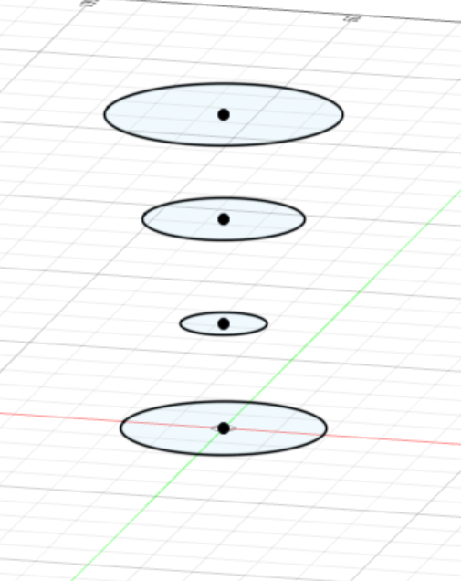
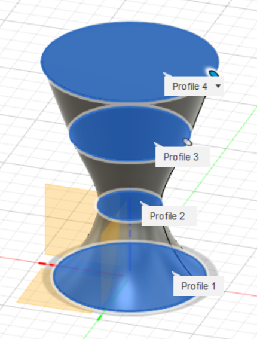
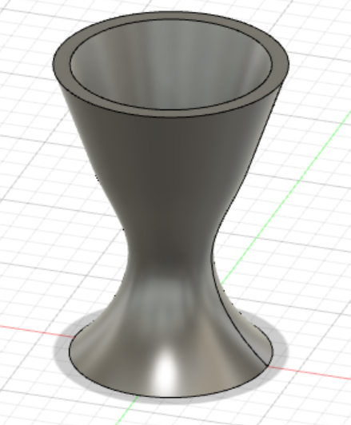
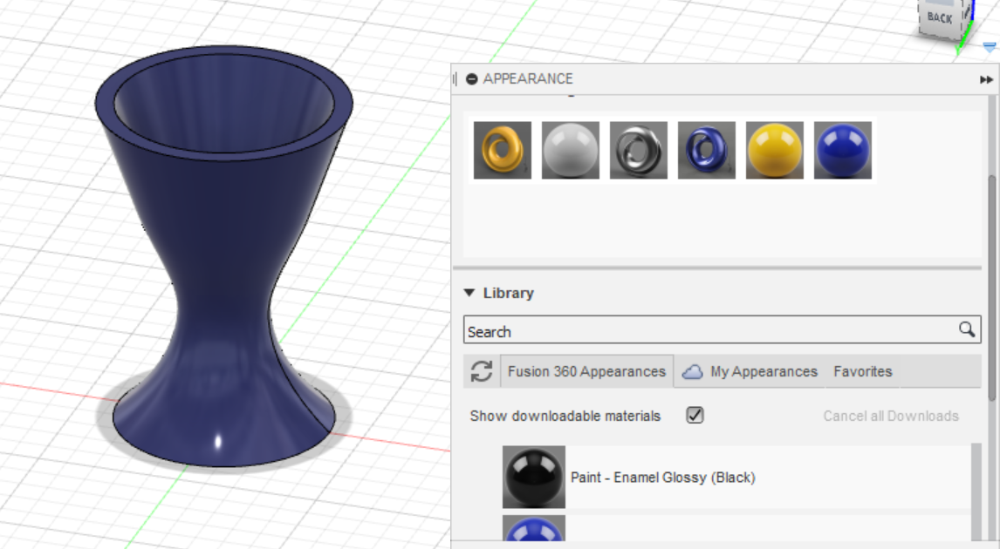
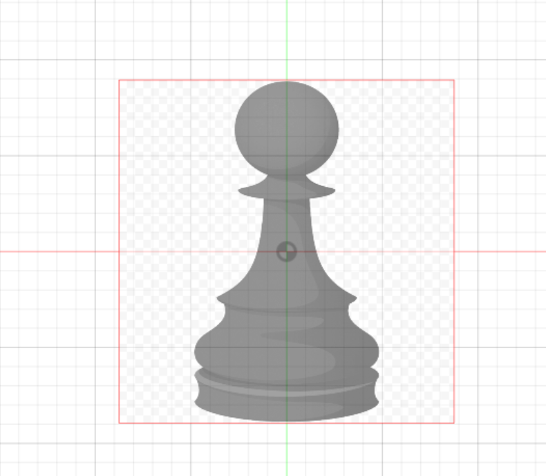
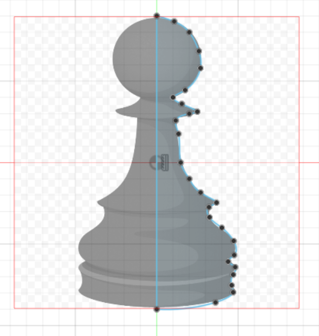
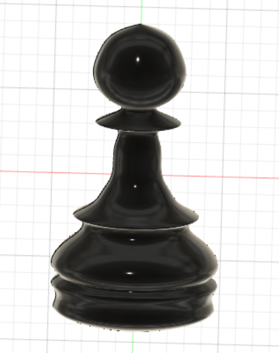
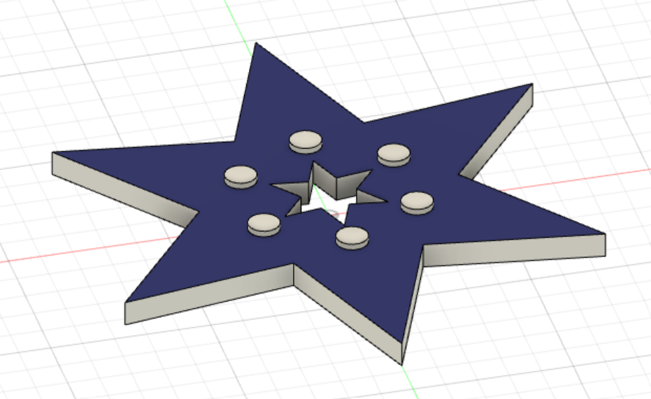

Computer Aided Design
Softwares used:
There are 2 types of 2D images:
Raster image
Raster graphics are composed of pixels which are small squares of information in a grid.
The array of pixels and various colours come together to form an image and provides excellent details when handling shading and gradients.
We use raster graphics as it creates rich and detailed images since every pixel in a raster image can be a different colour therefore you can create a complex image with any kind of colour changes and variations.
Vector image
Vector graphics are based on mathematical formulas (made up of points, lines, and curves etc) which make up of a series of small points that combine together to make lines and images. Vector graphics are more flexible than raster graphics because they can be easily scaled up and down without any loss to the quality of the image.
Here are some picture showing the difference between Raster & Vector images
Vector vs Raster
Gimp is mainly uses for raster graphics while Inkscape is mainly uses vector images. For this module, since we will be doing lazer cutting and 3d printing etc, it would be a better choice to use vector images since it has smoother lines and points provides a more accurate precision when doing the cuttings.
3D images
Importance of 3D modeling
3D modeling is important to us as it can easily show dimensions in 3D space of objects and their relationships. This will allow others to visualize space, movement, access of the model and so on. 3D models can be used to create 2D drawings directly which is more efficient.
Getting started with Fusion 360
Fusion 360 is a software that helps to create 3D designs.
There are many different ways to create a designs on fusion 360.
Here, i'll be showing you a simple example of designing a egg cup.
To start of with a simple design, click on the "create sketch icon" on the top left corner under the Solid/Surface segment. After you are done with your sketch, click the "create" tab and select "loft", lofting helps to connect the sketeches and form the shape of your design. After you are done creating the structure of your design, to create a hollow centre,click on "modify" and select "shell" which will create the space for holding the egg.
  Additionally, if you would like to have a nicer design, you can change the appearance by clicking on "modify" and select "appearance". Here, you can choose the available colours and materials for your design.
Next, i'll be showing you how to create a pawn.
Firstly, a easy way to create the sketch is to import a 2D image of a pawn by clicking on the "insert" option on the top right hand corner, select "browse my computer" and choose the 2D image of the pawn that you had downloaded. Next, click on "create sketech", by using "lines" and "fit point spline", outline half of the imagae of the pawn. A useful tip to undo the lines/splines is to press "Ctrl + Z". Once you are done with the sketch, click on "finish sketch".
  Finally, select the image and around the top left area, click on "create" and select "revolve". Choose the axis that you want the selected image to revolve about, revolve the pawn 360° and you are done.
Here is a design of a keychain, concept is similar where you start with a sketch and extrude out into 3 dimension. One unique learning point in this design is the use of "filet" which can be found on the "modify" tab, which helps to smoothen and round the edges of the corners of the rectangle.

Here is another simple design of a star through sketching and extrusion.
Next, i'll be showing you how to create a box made of different parts.
To make a box with specific dimension, you can click on "modify" select "change perimeters" and insert the following parimeters for the box model.